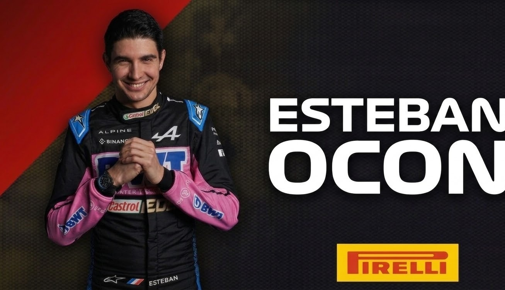

Esteban Ocon
DRIVER PRESENTATION

Esteban Ocon
Precisión Táctica y Resiliencia Competitiva de Esteban Ocon en la Élite del Automovilismo
Esteban Ocon inició su trayectoria en el karting francés (2006), forjando un camino basado en el talento puro y la determinación. Tras dominar la F3 Europea y la GP3, debutó en F1 en 2016, consolidándose rápidamente como un piloto de extrema fiabilidad y ritmo constante. Su paso por Force India y su posterior integración a Renault/Alpine en 2020 evidenciaron su capacidad para trabajar en estructuras de fábrica y desarrollar monoplazas complejos. El punto culminante de su carrera llegó en 2021 con su histórica victoria en el Gran Premio de Hungría, donde demostró una resistencia psicológica excepcional bajo la presión de los líderes mundiales. Ocon representa el modelo de piloto metódico y disciplinado, capaz de capitalizar cada oportunidad estratégica para entregar resultados de alto valor para su equipo.
MOMENTOS DESTACADOS

Victoria en Hungría 2021
Su momento de gloria: Ocon logra una victoria histórica para Alpine tras una carrera caótica y aguantando a Vettel hasta el final.

Podio en Sakhir 2020
Su primer podio en la F1 con Renault, demostrando su capacidad de estar ahí cuando las oportunidades se presentan.
Consolidación en Alpine
2021: El año de su consolidación como líder del proyecto francés, renovando su contrato a largo plazo con la escudería.